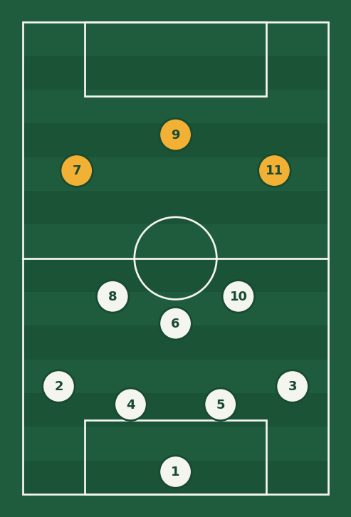

Bienvenido a GolTáctico
Después de cada partido todo el mundo opina, pero pocas veces alguien explica qué pasó de verdad en la cancha. GolTáctico nace para eso: mirar el partido con calma, revisar los números y contarte, en pocas palabras y con imágenes, por qué un equipo ganó o perdió.
La formación 4-3-3, paso a paso

El 4-3-3 es una de las formaciones más usadas en el fútbol moderno. Los números se leen desde atrás hacia adelante: cuatro defensas, tres mediocampistas y tres delanteros. El portero no se cuenta porque siempre está.
Su gran ventaja es que ocupa bien todo el ancho de la cancha. Los dos extremos abren el campo por las bandas, el delantero centro fija a los defensas rivales y los tres mediocampistas controlan el balón en el centro. Equipos como el Barcelona de Guardiola hicieron famoso este sistema.
Estas son las funciones principales de cada línea:
- Defensa (4): dos centrales que protegen el área y dos laterales que suben a atacar por las bandas.
- Mediocampo (3): un pivote defensivo (el 6) y dos interiores que conectan con el ataque.
- Ataque (3): dos extremos rápidos y un delantero centro que termina las jugadas.
Si quieres ver cómo explica la FIFA las reglas y el juego, visita el sitio oficial de la FIFA.
Los números que importan

El marcador no siempre cuenta toda la historia. Un equipo puede perder 1-0 habiendo creado muchas más ocasiones que su rival. Por eso en cada análisis de GolTáctico revisamos algunas estadísticas clave que ayudan a entender quién dominó de verdad el partido.
La métrica más útil hoy es el xG, o goles esperados. Mide la probabilidad de que un tiro termine en gol según la distancia, el ángulo y el tipo de jugada. Si quieres explorar estos datos por tu cuenta, FBref tiene estadísticas gratuitas de las principales ligas del mundo.
| Estadística | ¿Qué mide? | ¿Por qué importa? |
|---|---|---|
| Posesión (%) | Tiempo que cada equipo tiene el balón | Muestra quién controla el ritmo del partido |
| Tiros a puerta | Remates que van dentro del arco | Indica qué tan peligroso fue el ataque |
| xG (goles esperados) | Calidad de las ocasiones creadas | Dice cuántos goles "merecía" marcar un equipo |
| Pases completados | Pases que llegan a un compañero | Refleja la precisión y la organización del equipo |